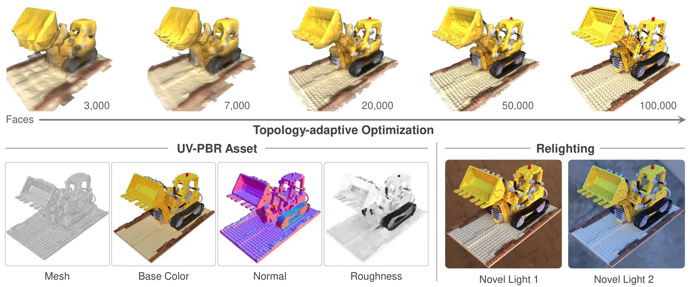
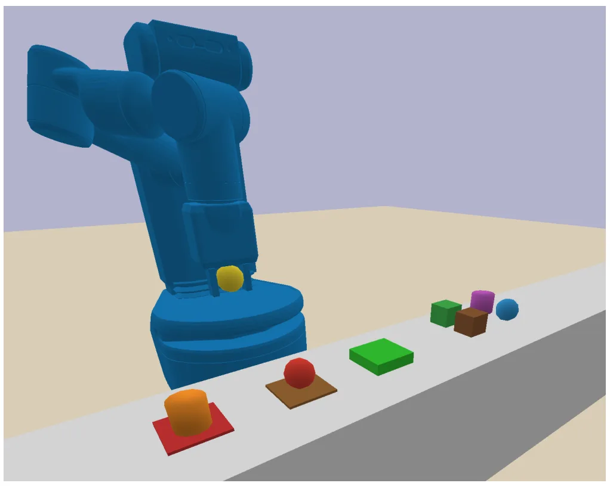
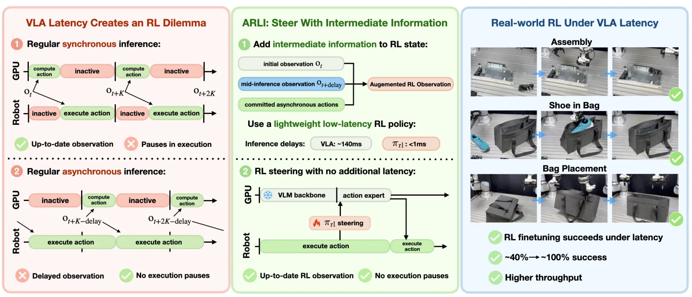
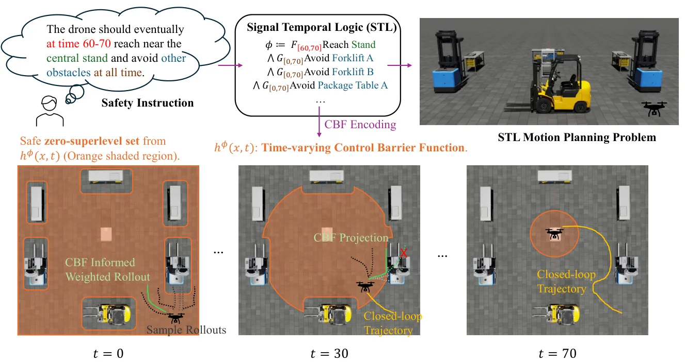
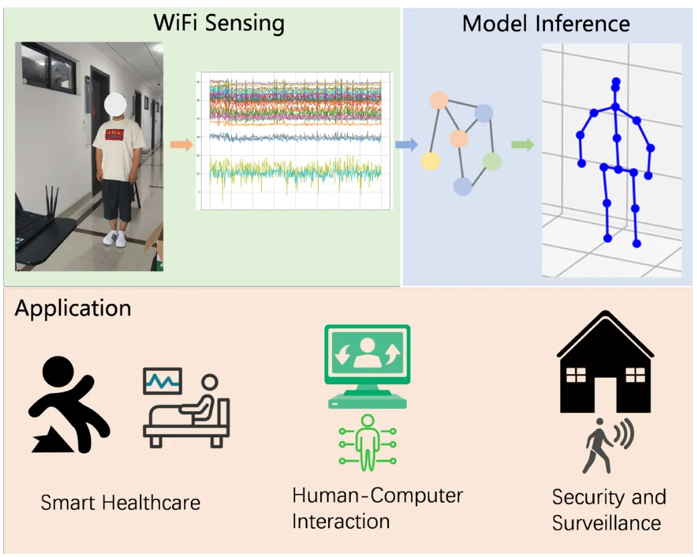

论文预览
新论文 · 日期 2026-08-26 · score 9 · cs.CV, cs.AI, cs.GR
作者：Mayank Singh, Michele Stoppa, Alvise Memo, Rui Yu, Harsha Kalli, Srimanth Gunturi, Muhammad Ahmed Riaz, Behrooz Shahsavari, Waleed Abdulla, David E. Jacobs
评分 9/10
3DGS三维资产生成PBR可重光照
一句话工作总结：重点不在定位，但展示了从单图到可编辑、可重光照 3DGS/网格资产的完整表示链路，对三维重建与资产化有参考价值。
Luce 提出一种把几何与 PBR 材质统一到体素化多模态 Gaussian cloud 中的三维表示，并用变分自编码器和 rectified-flow transformer 从单张图像生成。输出既可用于可重光照渲染，也可导出带切线空间法线图的纹理网格；在 Toys4K 上报告 FID 较强基线提升 28%，并改善 AI 生成图像的 CLIP 对齐分数。
High-fidelity image-to-3D generation requires a 3D representation that captures both geometry and appearance. To support relighting and integration into standard rendering pipelines, the representation should…
新论文 · 日期 2026-08-26 · score 9 · cs.CV, cs.AI, cs.GR, cs.LG
作者：Alireza Moazeni, Shichong Peng, Yanshu Zhang, Chirag Vashist, Ke Li
评分 9/10
点渲染内禀分解反照率3DGS
一句话工作总结：对点基三维表示的颜色、反照率和材质分解提出更直接的监督方式，适合关注 3DGS 外观建模和可解释渲染的读者。
论文指出基于体渲染的点表示内禀分解会把外观特征错误归因到单个半透明 primitive，因为监督只作用于射线最终颜色。Intrinsic PAPR 通过在射线—表面交点直接预测外观，提供逐点监督，并结合 cIMLE 二维反照率先验和空间雕刻损失处理单目歧义与多视角一致性。
Recent point-based intrinsic decomposition and inverse rendering methods have advanced the modelling of the shading and albedo of 3D scenes. However, we identify a fundamental limitation: these methods suffer…

新论文 · 日期 2026-08-26 · score 7 · cs.GR, cs.CV
作者：Chuanjin Fan, Lifan Wu, Wenjie Chang, Hanzhi Chang, Wenfei Yang, Tianzhu Zhang
评分 8/10
多视图重建网格拓扑UV-PBR逆渲染
一句话工作总结：把多视图重建结果直接推进到拓扑、UV、材质和光照均可交付的资产，适合关注重建后处理与标准 DCC 工作流的读者。
ExMesh++ 分阶段从多视图图像重建可编辑的 UV-PBR 网格资产。第一阶段通过自适应顶点拆分与合并优化显式几何和拓扑，同时维护 UV 一致性；第二阶段固定网格—UV 载体，联合优化 UV 空间 PBR 材质图和环境光，并用次级射线建模一跳漫反射间接光。
Multi-view reconstruction extends beyond surface recovery to editable and relightable mesh assets. Such assets require well-formed topology, valid UV parameterization, and explicit PBR material maps. Existing…

新论文 · 日期 2026-08-26 · score 4 · cs.RO, cs.AI
作者：Can Emir Bora, Emre Ugur
评分 6/10
TAMP宏算子任务规划符号状态
一句话工作总结：虽非 SLAM 算法，但对地图语义、任务规划和操作机器人系统的符号—几何耦合有直接启发。
该系统从示范数据中发现因果相连的动作对，将重复的多步序列压缩为宏算子，并删除任何学习到的算子都不引用的谓词，从而缩小搜索时的符号状态。在四个 TAMP 领域中，报告最高 4.6 倍规划加速，并解决一个基线无法完成的长序列任务。
Creating symbolic operators by hand is one of the main bottlenecks in deploying Task and Motion Planning systems (TAMP). Recent works show that these operators can instead be learned directly from demonstratio…

新论文 · 日期 2026-08-26 · score 4 · cs.RO, cs.LG
作者：Brian Zhu (Siemens), Momen Khalil (Siemens), E Harrison (UC Berkeley), Emanuele Poggi (Siemens), Philipp Schmitt (Siemens), Bernd Kast (Siemens), Philine Meister (Siemens), Pranav Atreya (UC Berkeley), Qiyang Li (UC Berkeley), Finn Ferchau (Siemens), Cesar Colmenero (Siemens), Yash Shahapurkar (Siemens), Gokul Narayanan (Siemens), Melih Erdogan (Siemens), Kai Wurm (Siemens), Georg von Wichert (Siemens), Oier Mees (Microsoft, ETH Zurich, UC Berkeley), Eugen Solowjow (Siemens), Andrew Wagenmaker (UC Berkeley), Sergey Levine (UC Berkeley)
评分 6/10
机器人策略强化学习推理延迟异步控制
一句话工作总结：为视觉—语言—动作策略接入真实机器人系统提供延迟建模思路，对传感器、定位和控制链路的异步处理也有参考意义。
ARLI 框架针对大型通用机器人策略的推理延迟，将已提交动作和推理中间观测加入状态，以恢复近似 Markov 结构；同时在推理窗口中用低延迟策略维持反应性。仿真和真实操作实验显示，标准 RL 在延迟下失效时，该方法仍能有效微调，甚至接近或超过无延迟条件下的标准 RL。
While reinforcement learning (RL) allows generalist robot policies to continually improve during deployment, the large model size of modern generalist policies, such as VLAs, poses a fundamental obstacle to ef…

新论文 · 日期 2026-08-26 · score 4 · cs.RO, cs.SY, eess.SY
作者：Yiqi Zhao, Taekyung Kim, Hideki Okamoto, Bardh Hoxha, Jyotirmoy V. Deshmukh, Lars Lindemann, Georgios Fainekos
评分 6/10
MPPI信号时序逻辑控制屏障函数安全导航
一句话工作总结：为地图约束、任务时序和采样式控制提供统一接口，适合关注安全导航和规划—定位系统耦合的读者。
方法将离散时间 Signal Temporal Logic 公式编码为候选时变控制屏障函数，并集成到可并行采样的 Model Predictive Path Integral 控制器中。在四个火星车规划案例和 NVIDIA Isaac Lab 四旋翼实验中，作者报告了较高的安全性与效率。
Safety-aware motion planning remains a challenge in robotics, especially when missions are time-critical and are under complex specifications. In this paper, we propose safety-aware-stl-mppi, a computationally…
新论文 · 日期 2026-08-26 · score 4 · cs.CV, cs.GR, cs.HC
作者：Bo Pang, Jiaqi Pan, Xiaocheng Zhang, Jiacheng Xu, Guoping Wang, Peng-Shuai Wang
评分 5/10
三维编辑多智能体Blender视觉闭环
一句话工作总结：展示了在已有三维重建资产上进行视觉闭环、局部编辑和身份保持的另一条路线，对三维场景交互应用有启发。
ViSculpt 是一个无需训练的多智能体系统，直接在 Blender GUI 中编辑已有网格。多模态模型观察视口、推理当前网格状态，并通过模拟用户交互执行局部修改，而不是重新生成几何或只生成脚本；初步基准显示其能遵循自然语言指令并保留未编辑区域和资产整体身份。
3D geometry editing is a critical yet labor-intensive part of the graphics pipeline, requiring artists to translate creative intent into precise operations in complex professional software. Large language mode…

新论文 · 日期 2026-08-26 · score 3 · eess.SP
作者：Kaixuan Huang, Yuanbo Chen, Guangjin Pan, Shiyi Mu, Tao Yu, Guhan Zheng, Shunqing Zhang
评分 4/10
WiFi sensing三维姿态多径建模跨环境泛化
一句话工作总结：不是 GNSS/SLAM 工作，但体现了物理传播模型与跨环境表示学习结合的思路，可作为无线感知与多模态定位研究的旁支参考。
该框架显式建模无线信号传播特性，用多径感知注意力捕获环境变化，并通过解耦表示学习分离姿态相关因素和环境特定因素，以提升跨环境泛化。作者在 Person-in-WiFi-3D、MM-Fi 和真实室内部署中评估了移动与跨域场景下的三维姿态估计鲁棒性。
Device-free human pose estimation using commodity WiFi signals has emerged as a promising paradigm for pervasive sensing in mobile computing systems. However, existing approaches often suffer from severe perfo…